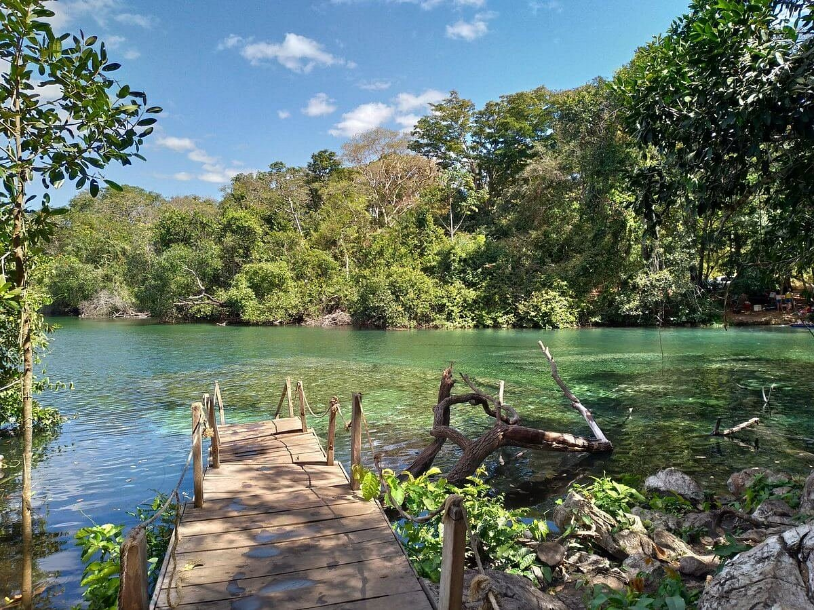
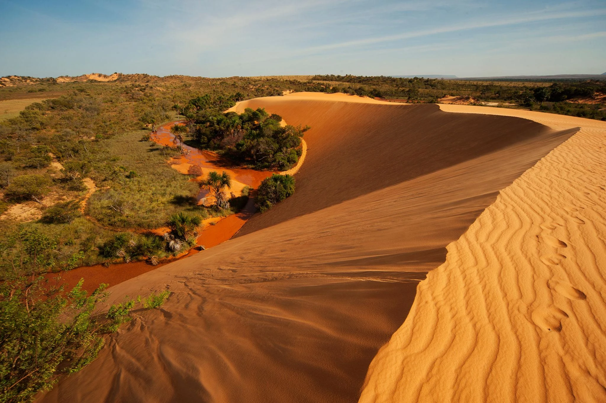
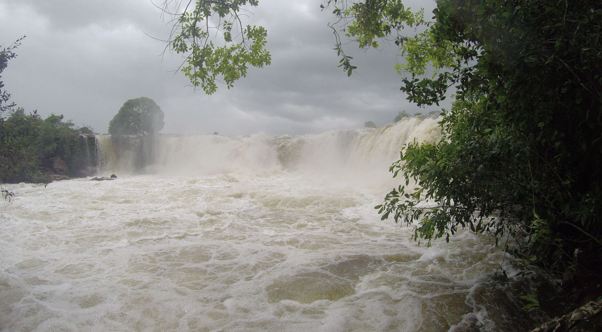
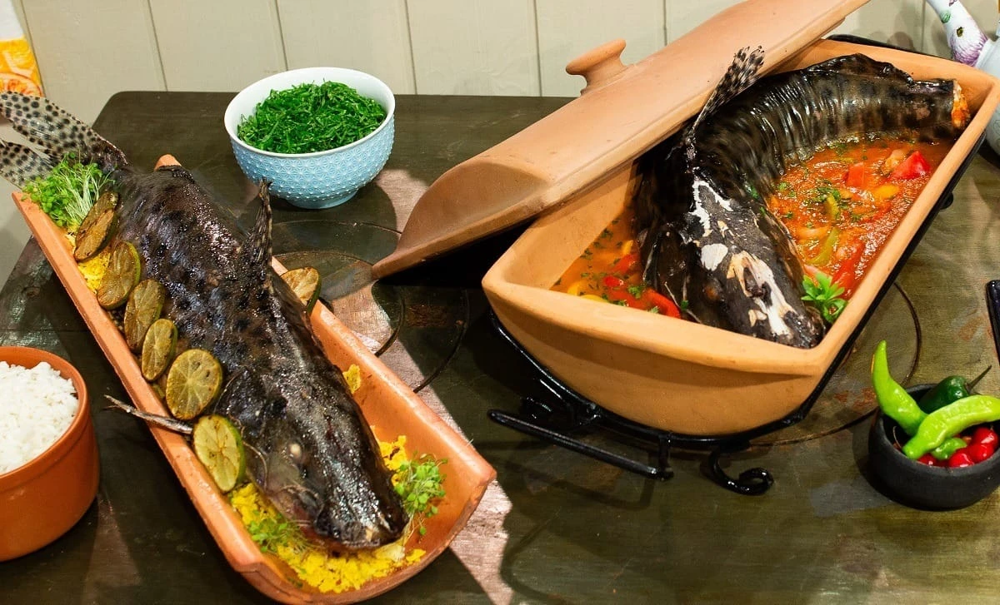
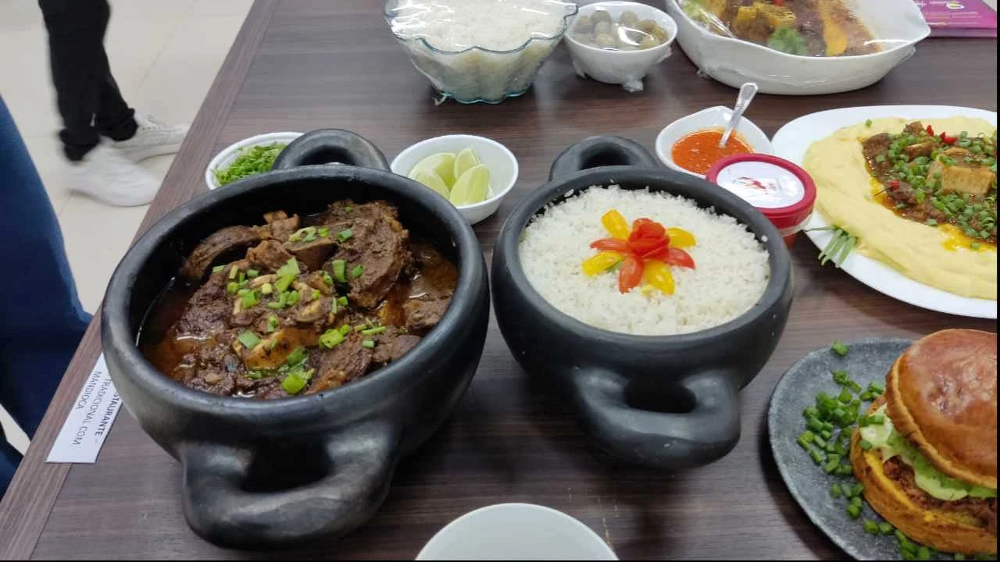
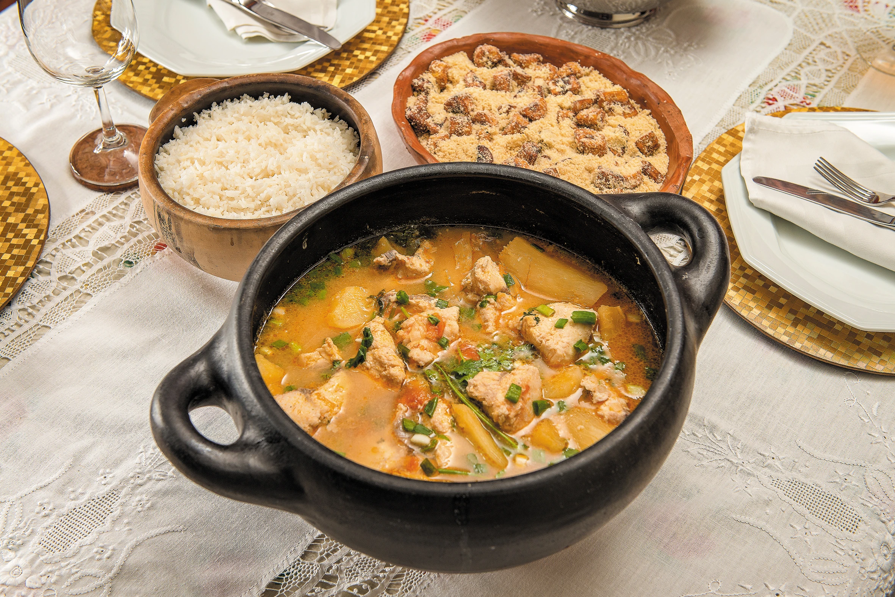

Capital
Palmas
Conheça destinos, culturas, sabores e paisagens de todas as regiões
brasileiras.
Destinos, culturas e paisagens
incríveis te esperam.
O Tocantins é o mais jovem estado do Brasil, criado em 1988 a partir da divisão de Goiás. Localizado na Região Norte, destaca-se por suas paisagens naturais exuberantes, rios de águas cristalinas, cachoeiras, serras e pelo famoso cerrado brasileiro. O estado possui grande potencial para o ecoturismo e o turismo de aventura.

Palmas
Aproximadamente 277.423,625 km²
Cerca de 1,58 milhão de habitantes
Norte

O principal destino turístico do estado. Conhecido por suas dunas alaranjadas, fervedouros de águas cristalinas, cachoeiras e paisagens únicas do cerrado.

A maior cachoeira do Tocantins em volume de água. Suas corredeiras impressionam os visitantes e formam um dos cenários mais fotografados do estado.

Formado pela Usina Hidrelétrica Luís Eduardo Magalhães, oferece belas praias de água doce, esportes náuticos e um pôr do sol espetacular.

Preparado geralmente com tucunaré ou surubim, é servido sobre uma telha de barro com molho de tomate, pimentões e temperos regionais.

Prato feito com ossobuco bovino cozido lentamente, acompanhado de arroz, mandioca e temperos típicos. É considerado o "fast food" tradicional do tocantinense.

Caldo espesso preparado com peixe, farinha de mandioca e temperos, bastante apreciado nas comunidades ribeirinhas.
Período seco: Maio a setembro (melhor época para turismo e para curtir as praias de rio).
Período seco: Maio a setembro (melhor época para turismo e para curtir as praias de rio).
Jalapão: Ideal para ecoturismo e aventura. Palmas: Praias de água doce, cultura, culinária e lazer. Região do Cantão: Rica biodiversidade (transição entre Cerrado e Amazônia) e observação da fauna
Jalapão: Ideal para ecoturismo e aventura. Palmas: Praias de água doce, cultura, culinária e lazer. Região do Cantão: Rica biodiversidade (transição entre Cerrado e Amazônia) e observação da fauna
Prove o chambari, considerado o prato mais tradicional do estado (especialmente no café da manhã ou almoço).
Prove o chambari, considerado o prato mais tradicional do estado (especialmente no café da manhã ou almoço).